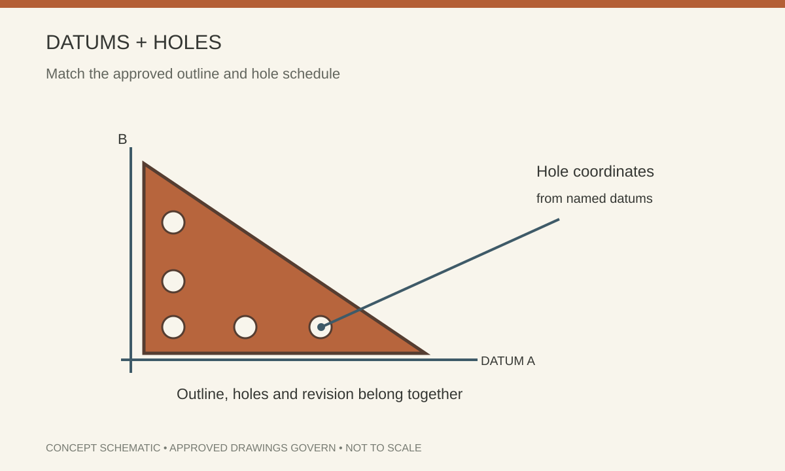

QUALITY & FABRICATION
Weathering Steel Gusset Plates: Review the Hole Layout Before Cutting
A connection plate can look simple while carrying several drawing decisions. Resolve those decisions before a repeated batch is released.
Read the guide ↗